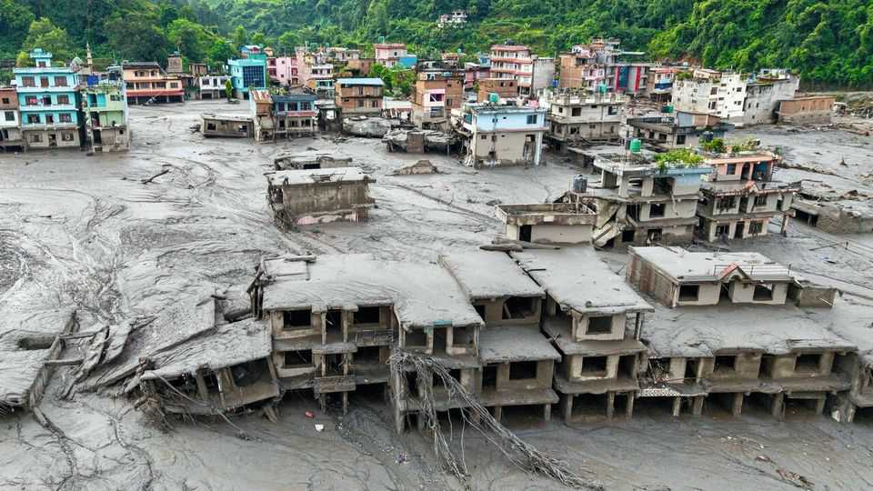

Asia
Nepal flash floods

Aug 27th 2026
Devastating flash floods struck an area on the border between Nepal and Tibet, apparently triggered by the fall of a huge chunk of ice that broke off a glacier. A destructive torrent tore down the valleys below. Hundreds were dead or missing, including many tourists. ■